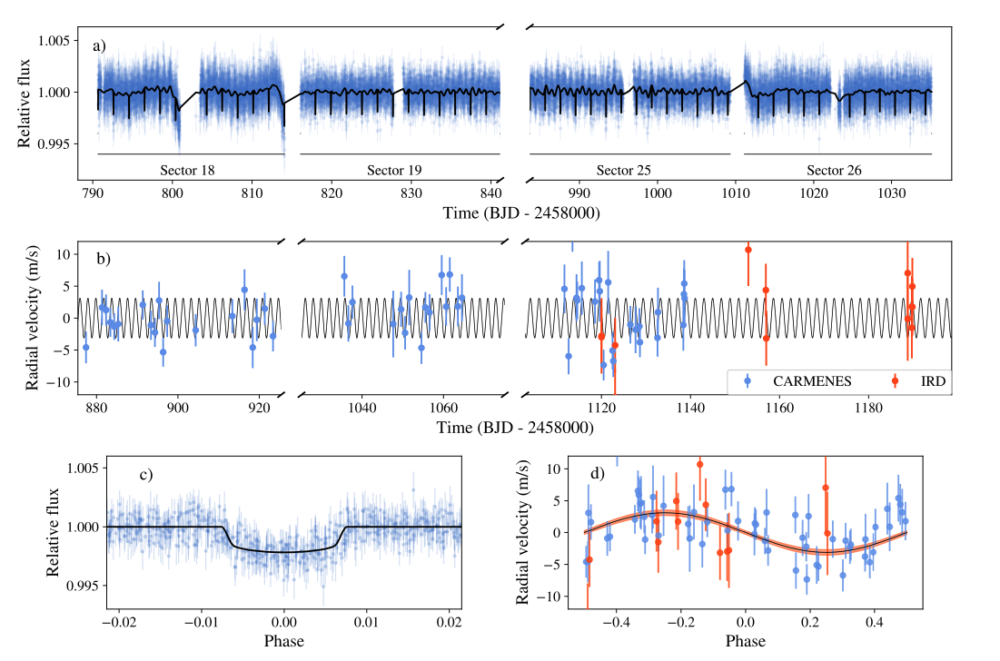
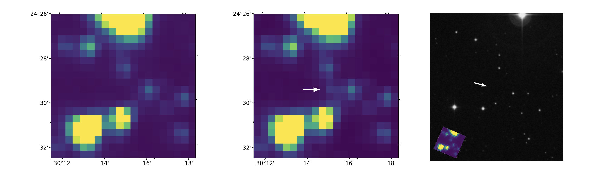

Hello and welcome TESS followers to this weeks news bulletin! This week we present three papers from the archive, enjoy!
Mass and density of the transiting hot and rocky super-Earth LHS 1478 b (TOI-1640 b) (Soto et. al., 2021):
In this paper the authors present the confirmation and characterization of a super-Earth planet transiting TOI-1640. The host star is an inactive red dwarf with a J-band magnitude of 9.6, a mass of 0.2 M⊙, a radius of 0.25 R⊙, and an effective temperature of 3381 K.
Using four sectors of TESS data a transit-like feature was detected with a period of 1.949 days. Utilizing 57 radial-velocity (RV) measurements from CARMENES, and 13 RV measurements from IRD, the authors determine that the signal is produced by a planet that has a mass of 2.33 M⊕ and a radius of 1.24R⊕. The bulk density of the planet is 6.66 g cm-3 which is consistent with a rocky planet with a Fe and MgSiO3 dominated composition. See this fascinating paper for more information about the system.
GRB 191016A: A Long Gamma-Ray Burst Detected by TESS (Smith et. al., 2021):
Not only can TESS be used for discovering new exoplanets, it can also be used to detect many types of transients - producing high cadenced light cures of energetic events such as Gamma-ray bursts (GRBs).
One such event is GRB 191016A, a long Gamma-Ray Burst (GRB) which was detected by Swift-BAT. The peak afterglow of this long GRB was at least 1000 seconds after the BAT trigger, with the brightest TESS data point occurring 2589.7 seconds post trigger. The GRB was not detected by Fermi-LAT, but was detected by Fermi-GBM without triggering.
From ground-based photometry a photometric redshift of 3.29 was derived. Using the high-energy emission and optical peak time derived from TESS data, an estimated Lorentz factor between 90-133 was calculated. The GRB is quite bright and has a peak optical R-band magnitude of 15.1.
Automated identification of transiting exoplanet candidates in NASA Transiting Exoplanets Survey Satellite (TESS) data with machine learning methods (Ofman et. al, 2021):
This paper focuses on the use of an artificial intelligence (AI) technique that uses machine learning (ML) to find exoplanets in the TESS data. The machine learning methodologies combine several algorithms developed by ThetaRay, Inc. The technique was initially trained on Kepler exoplanet data, and validated with the confirmed candidates. The technique was then applied to the TESS data, specifically 10,803 light curves of threshold crossing events. From these data the authors find 39 new exoplanet candidates targets.

Fig 1. Taken from Soto et. al., (2021). Data and joint fit results with juliet. a) TESS photometry for TOI-1640, with the black line representing the best transit + GP fit. b) Radial velocity data from CARMENES and IRD, with the jitter term added to the uncertainties. The black line is the best fit Keplerian model. c) Phased-folded TESS data, with the GP component removed. The black line is the best transit fit. d) Phased-folded RV data. The black line is the best fit Keplerian model, and the red-shaded area represents the 68% confidence interval.

Fig 2. Taken from Smith et. al., (2021). TESS full-frame image in the cadence just before the BAT trigger (left) and at the peak flux of the burst (center). The emergence of the afterglow is apparent in the center of the image, indicated by the white arrow. Contrast has been increased versus the right panel of Figure 1 in order to increase visibility. The right panel shows the same region of the sky, with a slightly different orientation, in the Digitized Sky Survey (DSS); a small inset of the TESS image is provided in the bottom left corner to demonstrate the change in orientation.